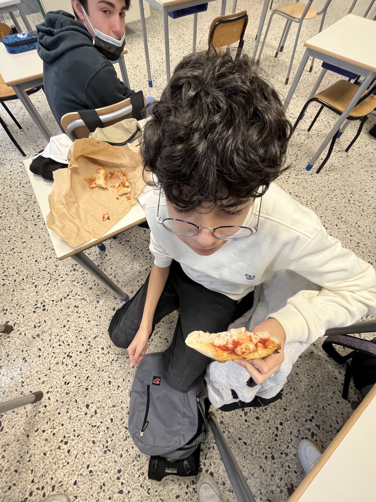

<!DOCTYPE html>
<html>
<head>
    <title>ALEX FEO</title>
</head>

<body>
    
</body>
</html>
<html>
<head>

<title> FEO ALEXX </title>
</head>
<body>
<body bgcolor="pink"></body>

<h1 align="center" style="font-size: xx-large; font-family:Arial, Helvetica, sans-serif;">FEO MEGLIO DEL COLOSSEO </h1>

<hr>

<p align="center" style="font-size: xx-large; font-family:Arial, Helvetica, sans-serif;">
    <h1 align="center" style="font-size: xx-large; font-family:Arial, Helvetica, sans-serif;">BIOGRAFIA</h1>
<h4 align="center" style="font-size: xx-large; font-family:Arial, Helvetica, sans-serif;">opravvissuto al naufragio della Costa Concordia, riusci' con successo a far ricadere le colpe del disastro al capitano Francesco Schettino. Dal 2013 al 2016 e' stato al centro di numerose inchieste giudiziarie che lo hanno visto indagato per traffico di esseri umani. Nel 2020, dopo il dodicesimo divorzio, si e' ritirato a vita privata, attualmente vive nel comune di Velina. e' uno dei maggiori esponenti della corrente emo in Italia. In basso foto allegato con falso tatuaggio noto degli emo)</h4>
</p>

<p align="center">


</p>

<p>

<h3 align="center" style="font-size: xx-large; font-family:Arial, Helvetica, sans-serif;"> la primissima caratteristica che troviamo in questo esemplare di Feo
e' il suo continuo bisogno di cibo nelle ore scolastiche,riesce a mangiare dalle 2 alle 50 pizzette</span> a mattina senza contare le caramelle arcobalenate. (allegate foto di feo nel suo momento preferito del giorno)

<br>




<hr>


<h6 align="center" style=" font-family:Arial, Helvetica, sans-serif;"> ora si e' perso se lo trovate mandate richiesta a questo <a target=_blank href="https://youtu.be/dQw4w9WgXcQ">link </a> </h6> 


<p align="center" style="font-family: Arial, Helvetica, sans-serif;">
<a target=_blank href="https://play.google.com/store/apps/details?id=com.kumobius.android.walljumper&gl=IT"> per la tua felicita' </a>

</p>


</body>
</html>
